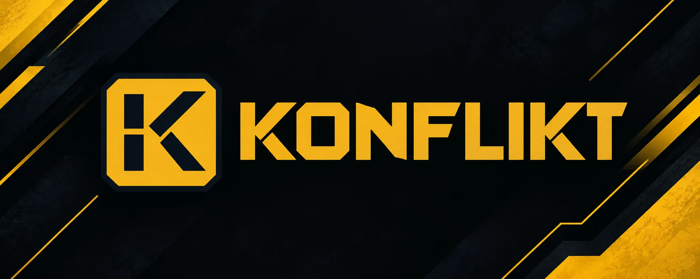

Warfare.
With a plan.
Konflikt is an upcoming modern warfare game that runs in your browser. Fully 3D, built for long matches where strategy beats reflexes.
Closed EU playtest
About Konflikt
A browser war game, built for the long fight.
Konflikt is a modern warfare strategy game. You claim territory, run an economy, command land and air forces, and decide who to fight and who to ally with, all in real time and all in your browser.
It is inspired by classic browser strategy games like OpenFront.io, which proved that territorial conquest works well on the web. Konflikt keeps that core idea and builds on it with fully animated 3D, custom unit models and a far deeper strategic layer.
- Genre
- Modern warfare strategy
- Platform
- Your browser
- Visuals
- Fully animated 3D
- Pace
- Longer, strategic matches
- Inspired by
- OpenFront.io
- Status
- Closed playtest
How it plays
Six systems. One war.
Konflikt is not a quick arcade match. Pacing is deliberate, and every system feeds into the others: land gives you resources, resources give you an army, and an army only matters if you can supply, protect and direct it. Over a longer match you plan multi-phase operations instead of reacting to the next five seconds.
-
01
Territory
Conquest is the foundation. You claim land, push your borders outward and hold what you take. Territorial control decides everything else: how much you can produce, how far you can reach, and how much you have to defend.
-
02
Resources
Every unit, structure and upgrade has to be paid for. Resource management is the engine behind your war effort, so what you gather and how you spend it shapes what you can build, field and sustain.
-
03
Land and air
Ground forces are only half of the battlefield. Air-to-ground dominance is a core part of the game, so the strongest commanders combine both instead of relying on one.
-
04
Supply and defense
Long wars punish overreach. You manage supply lines to keep your forces fighting and build fortified defenses to protect what matters most.
-
05
The Armory
Upgrade your unit blueprints in the Armory. Instead of fielding the same units as everyone else, you shape your forces to fit your own plan.
-
06
Alliance diplomacy
Force is not the only tool. Diplomacy happens in real time, so alliances can shift the balance of a match as much as any army can.
What makes it different
Konflikt vs. OpenFront.io
OpenFront.io is a popular 2D browser warfare game, now also on Steam, and the game that inspired Konflikt. Konflikt takes the same idea to full-scale war.
Quick answers
Do I need to install anything?
No. Konflikt is a browser-based game, so you play it in your browser.
How long are matches?
Longer than a typical quick-drop browser game. Konflikt is built for deeper, more involved matches where planning pays off.
Who can join the first playtest?
The first playtest is closed and open to handpicked European players.
Upcoming playtest
Closed playtest for handpicked European players
The closed EU playtest starts 15 October at 20:15 CEST. Get ready to experience Konflikt.
15 October · 20:15 CEST · EU players
Time to playtest start